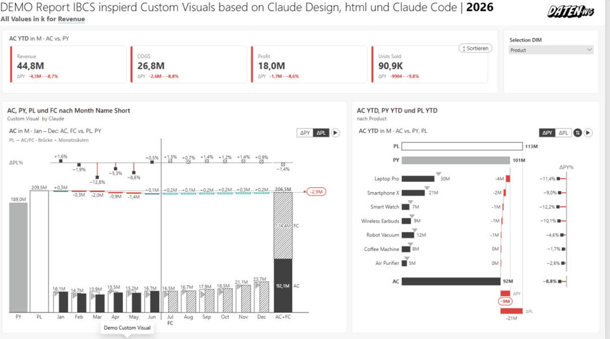
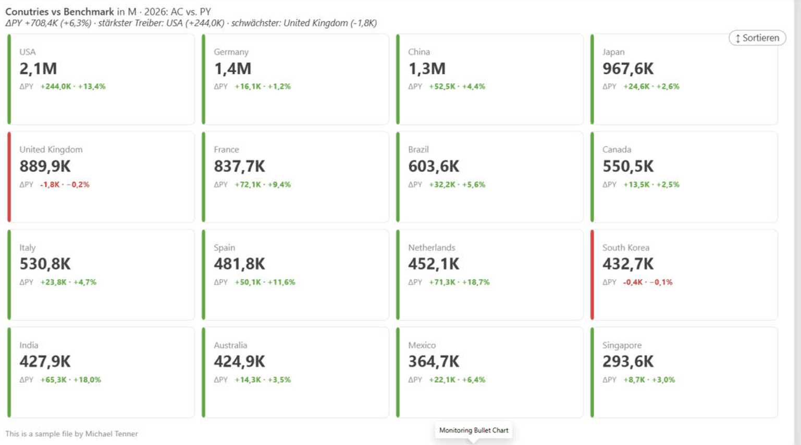
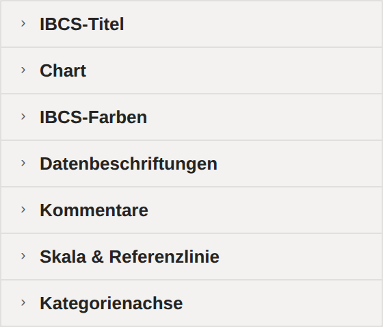

ChartKitchen byDatenWG — Schnellstart
Ein einzelnes Power-BI-Visual mit 13 IBCS-inspirierten Modi — von Säulen, Linien und Wasserfall über Tabelle und Matrix bis zum GuV-Statement. In zwei Minuten verstehen, was das Visual kann, wie du loslegst und wo die ausführliche Dokumentation steht.

Direkt-Download, keine Registrierung — der Link liefert immer die aktuelle Version. Import in Power BI Desktop: Visualisierungen → „…" → Visual aus einer Datei importieren. Alternativ gibt es alle Builds auch auf GitHub.
⬇ ChartKitchen herunterladenChartKitchen bringt als eines der ersten Custom Visuals eine Doku für KI-Assistenten mit: der komplette Datenvertrag (Feldrollen samt Fallstricken), alle ~90 Format-Properties mit exakten Namen und Werten fürs PBIR-Authoring, die persistierten Zustände (Sortierung, Klapp-Zustand, Spaltenbreiten), Formel-Syntax, DAX-Regeln und die bekannten Stolperfallen. Damit kann ein Agent — Claude, Copilot, Cursor & Co. — das Visual korrekt konfigurieren statt raten: fertige Berichtsseiten per Prompt, inklusive Einstellungen, die sich sonst nur mühsam zusammenklicken lassen.
So nutzt du ihn: ① Gib deinem Agenten den Guide — Link in den Chat, Datei ins Projekt oder neben deine CLAUDE.md/AGENTS.md legen. ② Stell die Aufgabe („Berichtsseite: Säulen mit ΔPL, YTD-Button, Tabelle nach ΔPY sortiert"). ③ Der Agent schreibt die passende Konfiguration mit exakten Property-Namen — der Guide sagt ihm auch, wie das Datenmodell aussehen muss.
Direktlink zum Kopieren für den Agenten-Chat: datenwgknowledgekitchen.com/ibcsInspiredChartDeck/AGENT-GUIDE.md · auch auf GitHub
01In drei Schritten loslegen
Von der Import-Datei zum fertigen IBCS-Chart — mit zwei, drei Feldern steht das erste Diagramm.
.pbiviz importieren
In Power BI Desktop im Bereich Visualisierungen auf … → Visual aus Datei importieren klicken und die .pbiviz-Datei wählen. Das ChartKitchen-Icon erscheint und lässt sich auf die Seite ziehen.
Kategorie + AC befüllen
Weise der Rolle Kategorie deine Achse zu und der Rolle Ist (AC) deine Kennzahl. Es erscheinen Landing-Kacheln — klick einen Modus an, und das Visual zeichnet ihn sofort.
PY / PL dazu
Ergänze Vorjahr (PY) und Plan (PL). Abweichungen kommen automatisch: absolute und relative Varianz-Panels stehen ohne weiteres Zutun neben oder über dem Basis-Chart.
Alle Schritte im Detail — Import, Minimal-Setup und Feldrollen — stehen im Schnellstart-Kapitel der Doku →
02Weiter in der Dokumentation
Jede Kachel springt direkt in die passende Sektion der ausführlichen Doku.

Schnellstart
Import, Minimal-Setup und die Feldrollen Kategorie, AC, PY, PL — Schritt für Schritt.
Öffnen →
Die 13 Modi
Säulen, Balken, Linie, Wasserfall, Brücke, Tabelle, Matrix, KPI-Karten, GuV und mehr — jeder Modus erklärt.
Öffnen →
Im Einsatz
Echte Power-BI-Beispiele: komplette Berichtsseiten, Monitoring, Vergleiche und mehr.
Öffnen →
Funktionen im Detail
Szenario-Notation, Small Multiples, Kommentare, Kumulierung, Top N und die weiteren Funktionen.
Öffnen →
Einstellungs-Referenz
Alle 84 Einstellungen in sieben Format-Karten — mit Schema-Skizzen des Formatbereichs.
Öffnen →FAQ & Troubleshooting
Häufige Fragen, typische Stolpersteine und schnelle Antworten rund um das Visual.
Öffnen →Doku als PDF (DE)
Die komplette deutsche Dokumentation als PDF zum Offline-Lesen und Weitergeben.
PDF laden ↓